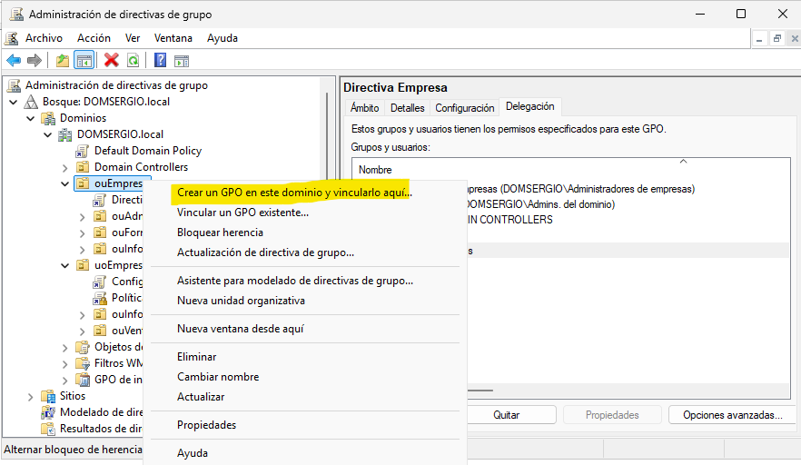
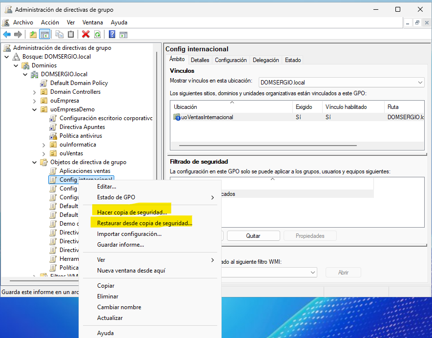

La Consola de administración de directivas de grupo (GPMC) es la herramienta principal para gestionar GPO en entornos Windows Server. Proporciona una interfaz gráfica centralizada para:
Crear y editar directivas de grupo
Vincular GPO a contenedores de Active Directory
Analizar la aplicación de directivas
Generar informes y realizar copias de seguridad
Acceso a GPMC:
Desde el menú Inicio: Herramientas administrativas → Administración de directivas de grupo
Ejecutar: gpmc.msc
Desde el Administrador del servidor: Herramientas → Administración de directivas de grupo
Ventana principal de GPMC mostrando el árbol de navegación con el dominio, las OU y las GPO existentes.
Group Policy Editor
El Editor de directivas de grupo permite configurar los parámetros específicos dentro de una GPO. Se accede desde GPMC al hacer clic derecho sobre una GPO y seleccionar "Editar".
Estructura del Editor:
Configuración del equipo: Políticas que afectan a los ordenadores
Configuración de usuario: Políticas que afectan a los usuarios
También es posible crear una GPO y vincularla simultáneamente a una ubicación:
Hacer clic derecho sobre el dominio o OU deseada
Seleccionar "Create a GPO in this domain, and Link it here..."
Introducir el nombre de la GPO
La GPO se crea y vincula automáticamente a esa ubicación
Nueva directiva de grupo en Unidad Organizativa y vincularla.
Diferencia importante
Con el primer método, la GPO se crea pero no se vincula automáticamente. Con el segundo método, se crea y vincula al mismo tiempo.
Vinculación de GPO
Una vez creada una GPO, debe vincularse a un contenedor (sitio, dominio u OU) para que tenga efecto. Una misma GPO puede estar vinculada a múltiples ubicaciones.
Vincular una GPO existente
Pasos:
En GPMC, navegar hasta la ubicación deseada (dominio o OU)
Remove link: Solo elimina el vínculo, la GPO sigue existiendo
Delete GPO: Elimina completamente la GPO de Active Directory
Habilitar y deshabilitar vínculos de GPO
Los vínculos de GPO pueden habilitarse o deshabilitarse temporalmente sin eliminarlos:
Deshabilitar un vínculo:
Navegar hasta la ubicación donde está vinculada la GPO
Hacer clic derecho sobre el vínculo
Seleccionar "Link Enabled" (quitar marca)
El vínculo aparecerá en gris indicando que está deshabilitado.
Uso práctico
Esto es útil para probar el impacto de una GPO o deshabilitarla temporalmente sin perder la configuración.
Vinculo Habilitado o Deshabilitado.
Editar y configurar una GPO
Una vez creada la GPO, es necesario editarla para añadir las configuraciones deseadas.
Las directivas de grupo son, en esencia, un conjunto de opciones y características del sistema operativo que se pueden activar, desactivar o configurar de forma centralizada. Cada directiva representa una configuración específica (como "longitud mínima de contraseña", "ocultar panel de control" o "instalar software automáticamente") que normalmente se configuraría manualmente en cada equipo. Mediante GPO, el administrador simplemente habilita, deshabilita o ajusta estos parámetros en el servidor, y se aplican automáticamente a todos los equipos y usuarios del dominio según corresponda.
El trabajo del administrador consiste en navegar por el árbol de directivas disponibles, localizar las configuraciones relevantes para su organización, y establecer su estado y valores. Windows proporciona miles de directivas predefinidas organizadas en categorías lógicas, listas para ser configuradas según las necesidades de seguridad, productividad y estandarización del entorno.
Acceder al Editor de directivas
En GPMC, hacer clic derecho sobre la GPO en "Objetos de directiva de grupo"
Seleccionar "Editar"
Se abre el Editor de administración de directivas de grupo
[...continúa el resto como estaba...]
Una vez creada la GPO, es necesario editarla para añadir las configuraciones deseadas.
Acceder al Editor de directivas
En GPMC, hacer clic derecho sobre la GPO en "Objetos de directiva de grupo"
Seleccionar "Editar"
Se abre el Editor de administración de directivas de grupo
Menú contextual de una GPO mostrando las opciones, con "Editar" resaltada..
Configurar una directiva
Ejemplo: Bloquear la barra de tareas
Navegar por el árbol hasta la directiva deseada:
Configuración de usuario
└── Directivas
└── Plantillas administrativas
└── Menú Inicio y barra de tareas
En el panel derecho, parecen las posibles opciones que podemos modificar sobre estos elementos y debemos hacer doble clic sobre la configuración que deseemos habilitar (o deshabilitar en caso de tenerla previamente habilitada)
Ventana de propiedades de una directiva.
Seleccionar el estado deseado:
No configurada: La GPO no modifica esta configuración (por defecto)
Habilitada: Activa la directiva
Deshabilitada: Desactiva explícitamente la directiva
(Opcional) Configurar opciones adicionales si las hay
(Opcional) Añadir un comentario para documentar el propósito
Hacer clic en "Aceptar"
Estados de una directiva
No configurada: La GPO no toca esa configuración
Habilitada: Activa la función o restricción
Deshabilitada: Desactiva explícitamente (diferente a "no configurada")
Ver la configuración de una GPO
Para consultar qué configuraciones tiene una GPO sin editarla:
En GPMC, seleccionar la GPO (un solo clic)
En el panel derecho, ir a la pestaña "Configuración"
Se muestra un informe jerárquico de todas las configuraciones aplicadas
Qué muestra:
* Lista de directivas habilitadas y deshabilitadas
* Valores configurados
* Organización por categorías (Seguridad, Software, Plantillas administrativas, etc.)
Navegación:
* "Mostrar todo": Expande todas las secciones
* "Ocultar todo": Contrae todas las secciones
* Solo aparecen directivas que están configuradas (no las que están en "No configurada")
Ventana de propiedades de una directiva.
Ámbito de aplicación
El ámbito de una GPO determina a quién afecta y puede configurarse mediante varios mecanismos:
Ubicación del vínculo
La ubicación donde se vincula la GPO determina el ámbito básico:
Ubicación
Afecta a
Sitio
Todos los usuarios y equipos del sitio AD
Dominio
Todos los usuarios y equipos del dominio
OU
Solo usuarios y equipos de esa OU (y sub-OU si hereda)
Es siempre aconsejable ubicar correctamente las directivas en las Unidades Organizativas adecuadas que ubicarlas en el dominio directamente y filtrar por grupos. Es mejor dejar en este filtrado "Usuarios autentificados" o "Equipos del dominio"
Filtros WMI (Windows Management Instrumentation)
Los filtros WMI permiten aplicar GPO basándose en características del sistema, como:
Versión del sistema operativo
Espacio libre en disco
Tipo de hardware
Configuración de red
Crear un filtro WMI:
En GPMC, expandir el dominio
Hacer clic derecho en "Filtros WMI"
Seleccionar "Nuevo"
Introducir nombre y descripción
Añadir consultas WMI
Guardar el filtro
Aplicar filtro WMI a una GPO:
Seleccionar la GPO en GPMC
En la pestaña "Scope", sección "WMI Filtering"
Seleccionar el filtro del desplegable
Ejemplo de consulta WMI:
-- Aplicar solo a Windows 10/11SELECT*FROMWin32_OperatingSystemWHEREVersionLIKE"10.%"-- Aplicar solo a equipos con más de 100GB libresSELECT*FROMWin32_LogicalDiskWHEREFreeSpace>107374182400ANDDriveType=3
Los filtros WMI requieren procesamiento adicional y pueden ralentizar la aplicación de GPO. Úsalos solo cuando el filtrado de seguridad no sea suficiente.
Deshabilitar secciones de una GPO
Si una GPO solo necesita configurar equipos o usuarios (no ambos), se puede deshabilitar la sección no utilizada para mejorar el rendimiento:
Hacer clic derecho sobre la GPO
Seleccionar "GPO Status"
Elegir una opción:
User configuration settings disabled: Solo se aplica configuración de equipo
Computer configuration settings disabled: Solo se aplica configuración de usuario
All settings disabled: La GPO está deshabilitada completamente
Es fundamental realizar copias de seguridad de las GPO antes de modificaciones importantes:
Hacer clic derecho sobre la GPO en GPMC
Seleccionar "Back Up..."
Elegir ubicación de destino
Introducir descripción (opcional)
Hacer clic en "Back Up"
Restaurar desde copia de seguridad
Hacer clic derecho sobre la GPO
Seleccionar "Restore from Backup..."
Elegir la ubicación de las copias
Seleccionar la copia a restaurar
Confirmar la restauración
Menú guardar copia de seguridad de GPO y restaurar.
Copiar una GPO
Para duplicar una GPO existente:
Hacer clic derecho sobre la GPO de origen
Seleccionar "Copy"
Hacer clic derecho sobre "Group Policy Objects"
Seleccionar "Paste"
Elegir permisos a copiar:
Preserve existing permissions: Mantiene los permisos actuales
Use default permissions: Aplica permisos por defecto
Copy from source: Copia los permisos de la GPO original
Uso de copias
Las copias son útiles para crear variantes de GPO similares o para probar cambios sin afectar la GPO original.
Perfecto, aquí tienes una versión equilibrada:
Delegación de permisos en GPO
La delegación es el proceso de otorgar permisos específicos a usuarios o grupos para que puedan realizar tareas administrativas sobre las GPO sin necesidad de ser administradores del dominio.
Siguiendo el principio de mínimo privilegio, la delegación permite:
Reducir riesgos de seguridad: Menos cuentas con privilegios totales
Distribuir responsabilidades: Cada departamento gestiona sus propias directivas
Mejorar eficiencia: No todo depende del equipo de IT central
Ejemplo práctico
El responsable IT del departamento de Marketing puede editar la GPO "CONFIG-Marketing" y vincularla a su OU, pero no puede modificar GPO de otros departamentos ni configuraciones críticas del dominio.
Tipos de permisos en GPO
Los permisos más comunes que se pueden delegar son:


{kind=link}
{kind=link}
{kind=link}


{kind=link}
{kind=link}
{kind=link}
{kind=link}
{kind=link}
{kind=link}